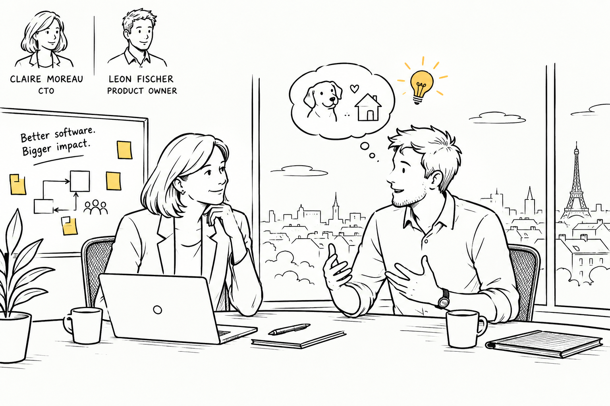

7 An Idea a Little Crazy

Leon Fischer stops in front of Claire Moreau’s office and knocks against the open door.
Claire looks up from her screen.
“That expression usually means trouble.”
“Does it?”
“Either trouble or another one of your ideas.”
“Good. Then we’re already making progress.”
She leans back in her chair and gestures toward the empty chair opposite her desk. Leon steps inside, pulls the door halfway closed, and sits down.
“Claire, we talked about our engineering challenges the other day. I have an idea. It’s a bit crazy, but before you reject it, please hear me out.”
“Now I’m curious. Should I be worried?”
“Not yet.”
“That’s reassuring.”
Leon grins. He has known Claire long enough to appreciate that she won’t simply agree with him to be polite. If she thinks his idea is nonsense, she’ll tell him. Usually, she’ll find a way to explain exactly why. He’s counting on that, actually, although he’s not going to tell her just yet.
“Have you ever heard of Spec-Driven Development?” he asks.
Claire tilts her head.
“I’ve come across the term. Isn’t that the idea of writing specifications before you let AI write the code?”
“That’s part of it. At least, that’s how I understand it from what I’ve read.”
“Which means you’ve already found out that there are several different opinions about what it actually is.”
“Exactly.”
“And you’ve decided we should try it.”
“Well, I haven’t quite got that far.”
Claire raises an eyebrow.
“All right, I may have got that far. But hear me out first.”
“Go on.”
Leon shifts forward in his chair.
“We’ve been experimenting with AI coding agents for a while now. And I think we can agree that they’re making us faster at writing code. The problem is that we’re not getting the improvements in delivery speed we expected. Code reviews are piling up, and we’re seeing more errors in production than we should.”
Claire nods.
“We’ve talked about that. The teams are producing changes faster, but we’re struggling to keep up with reviewing them. And some of the things that get through are causing problems we really shouldn’t be having.”
“Right. So I started wondering whether we’re approaching this the wrong way. We’re using AI to write code faster, but we’re still relying on the same ways of figuring out what to build, checking whether it does what we want, and making sure the changes fit into the existing system.”
“You think the problem isn’t the coding itself?”
“I think the coding is only one part of it. And perhaps not the part we should be focusing on most right now.”
Claire folds her arms.
“Okay. That’s a reasonable observation. Where does Spec-Driven Development come in?”
“From what I’ve read, the idea is to give the coding agents a much better understanding of what they’re supposed to build. Not just a prompt describing a feature, but a specification that captures the requirements, the expected behavior, and the decisions we’ve made. Something we can challenge and validate before we ask an agent to implement it.”
“Sounds good in theory.”
“That’s what I thought.”
“And?”
“And I haven’t found enough evidence yet to know whether it actually works as well as people claim.”
Claire smiles.
“Now we’re getting somewhere.”
“I knew you’d like that part.”
“I like it when people distinguish between an interesting idea and something they’ve actually tried.”
“Which brings me to the slightly crazy part.”
“Finally.”
Leon pauses for a moment. He has rehearsed this conversation in his head on the way to Claire’s office, but the more he thinks about it, the less he likes the idea of presenting it as a proposal with a list of arguments. Claire will ask questions anyway, and he’ll have to admit where he doesn’t have answers. Better to start with the reason he’s become interested in the first place.
“Have I told you about Caramelo?”
Claire thinks for a moment.
“The dog?”
“Yes. The one whose story I mentioned last week.”
“I remember something about an animal shelter. You were talking to someone who volunteers there, weren’t you?”
“That’s right. We got talking about how they manage their work. The whole process of taking in an animal, getting it checked by a vet, finding a foster family, handling adoption applications, and eventually finding it a permanent home. A lot of it still involves spreadsheets, messages, and people trying to keep track of what’s happening.”
“And you think we should build software for them?”
“Potentially. I don’t want to arrive with a solution before we understand what they actually need. But yes, I’d like to explore it.”
Claire glances at her screen, then back at him.
“That’s a rather different business from the ERP systems we usually build.”
“Exactly. We’d have to learn how they work. We’d have to talk to the people doing the work, understand their problems, and figure out where software could genuinely help. We could build something useful for them instead of another internal demo that gets abandoned when everyone moves on to the next experiment.”
“You make it sound almost like a real product.”
“That’s the idea.”
“And the connection to Spec-Driven Development?”
Leon laughs.
“I was getting to that.”
“I know. I’m just checking whether there’s a connection or whether you’ve found a dog and an excuse to try a new development methodology.”
“Both can be true.”
Claire laughs, and Leon relaxes a little.
“I’ve been thinking about this as a side project,” he continues. “Something we can develop with a small team, outside the commitments we’ve made to our ERP customers. We could work with the shelter, build something they can actually use, and explore whether Spec-Driven Development gives us a better way to work with AI agents at the same time.”
“You’re proposing to combine two things we don’t know much about. A new domain and a new development approach.”
“When you put it like that, it sounds worse.”
“It sounds like a fair description of your idea.”
“That’s why I came to you first.”
Claire considers the proposal for a moment.
“There’s another reason this might be worth exploring,” she says. “We’ve spent years building ERP software. We know how to develop systems that support complicated business processes. We know how to deal with rules that change, exceptions nobody anticipated, and data that has to remain consistent even when something goes wrong.”
“I’m not sure the animal shelter will appreciate all that expertise.”
“Perhaps not. But think about the kinds of businesses we don’t serve today. There are specialized industries with very particular needs where a full ERP system is overkill, but generic off-the-shelf software doesn’t quite fit either. Traditionally, building something tailored to those domains has been expensive. You end up with a bespoke solution that costs too much to develop and maintain, or you compromise on what the business actually needs.”
“And you think AI agents could change that?”
“I think they might. If we can combine what we know about building business software with the productivity promises of Agentic Engineering, we may be able to serve those domains in a different way. Smaller, tailored solutions. Perhaps modules that solve a particular business problem without requiring a customer to buy into an entire ERP system.”
Leon sits back for a moment. He comes into the room thinking about how to help the shelter and how to improve the team’s way of working. Claire is looking at what the company might learn from the experience, and where that knowledge could lead.
“So Shelter Flow could become a case study,” he says.
“Exactly. Not a demonstration that an AI agent can generate an application in a weekend. We can already make impressive demos. I want to know whether we can build something people actually depend on, in a domain we don’t know well, and maintain it without the cost and complexity eating up all the benefits.”
“That’s a slightly bigger experiment than I had in mind.”
Claire says:
“Only if you try to solve every possible problem at once. For now, you could build something useful for the shelter. But if we’re going to invest in this, let’s make sure we learn something the company can use beyond this one project.”
Claire’s expression becomes more serious.
“What would you actually want to learn?” she asks.
“Whether we can use a shared specification to improve the way people and AI agents work together. Whether we can get more of the important decisions right before implementation starts, instead of discovering disagreements during code review or, worse, after deployment.”
“And if it doesn’t work?”
“Then we’ll know more than we do today.”
“That sounds suspiciously like the answer people give when they want an unlimited research budget.”
Leon shakes his head.
“I was hoping you’d say that.”
“Of course you were.”
“I’m not asking for an unlimited budget. We agree on a fixed amount of time and money, put together a small team, and see what we can accomplish. If we discover something useful, great. If we don’t, we stop. But I’d like us to evaluate the approach based on what happens when we actually use it, not just on what people say about it.”
Claire looks at him for a moment.
“And you want me to support this because…”
“Because you’ve been looking at how we prepare the company for Agentic Engineering. Because we both know that making code generation faster doesn’t automatically make us better at building software. And because I think this could be an opportunity to explore a different way of working without putting our existing customer commitments at risk.”
“You’re assuming I want to change the way we work.”
“No. I’m assuming you want us to get better at it.”
Claire smiles faintly.
“That’s a more defensible assumption.”
Leon waits.
“What about the team?” she asks. “People have been through enough changes already. We introduced Scrum, reorganized responsibilities, adjusted our planning, and spent months trying to get everyone comfortable with the new process. Some of that helped. Some of it just gave us different meetings.”
“I know.”
“So if you walk in and tell them we’re now doing Spec-Driven Development, I suspect you’ll get a rather predictable reaction.”
“I’m not planning to walk in and tell anyone that.”
“What are you planning to do?”
“Start with the problem. Get a few people together, work with the shelter, and figure things out as we go. I don’t have a finished process to introduce. Honestly, I don’t even know yet what a good specification would look like for this kind of project.”
Claire studies him, apparently deciding whether that last admission is a reason to reject the proposal or a reason to take it more seriously.
“And you want to learn with the team.”
“Yes. I think that matters. If we want people to work differently, they need to understand why. I don’t want to replace one set of rules with another and hope for the best.”
Claire turns back toward her desk.
“All right,” she says. “Put together a proposal. Keep the scope small, define the budget, and be clear about what you want to learn. We’ll need to agree on what success looks like, even if we don’t know what the outcome will be.”
Leon feels the tension leave his shoulders.
“So that’s not a rejection?”
“Don’t look so pleased. I’ve agreed to consider an experiment, not to endorse Spec-Driven Development.”
“Of course.”
“And if your team spends three months producing beautifully documented specifications without delivering anything useful to the shelter, I reserve the right to say I told you so.”
“I would expect nothing less.”
“Good. Now go and find out what the shelter actually needs before you start designing software for them.”
Leon stands up.
“One more thing,” Claire says.
He turns.
“If this works, I want us to understand why. Not just whether the team enjoyed trying something new. We have seven teams building one ERP system, and we’re still struggling with dependencies between them. If your experiment reveals a better way to make decisions, understand boundaries, or coordinate work, I want to hear about that too.”
Leon nods. He hasn’t thought about the experiment quite in those terms, but he understands what she means.
“I’ll keep that in mind.”
“Please do. And Leon?”
“Yes?”
“Next time you have a crazy idea, just come in and tell me. You don’t need to warn me first.”
He grins.
“Where would be the fun in that?”
Leon leaves Claire’s office with permission to explore an idea, a budget to negotiate, and rather more questions than answers.
He has no illusion that building software for an animal shelter will be easy. He doesn’t know how much of their work can be improved with software, whether the shelter will have the time to work closely with his team, or whether Spec-Driven Development will make any meaningful difference to the way they build the product.
And Claire’s business idea is just as uncertain. Can they really combine their experience building complex business software with AI agents to deliver tailored solutions to specialized industries at a cost that makes sense? A useful product for one animal shelter won’t, by itself, prove that there’s a viable business in it.
But at least they have a chance to find out.
For Leon, it begins with Caramelo and the possibility of building something useful for people who care for animals. For Claire, the same project might reveal a new way for the company to bring its experience to businesses it has never served before. Neither of them knows yet whether those ambitions can be reconciled with the everyday realities of building and maintaining software.
That’s what the experiment is for.